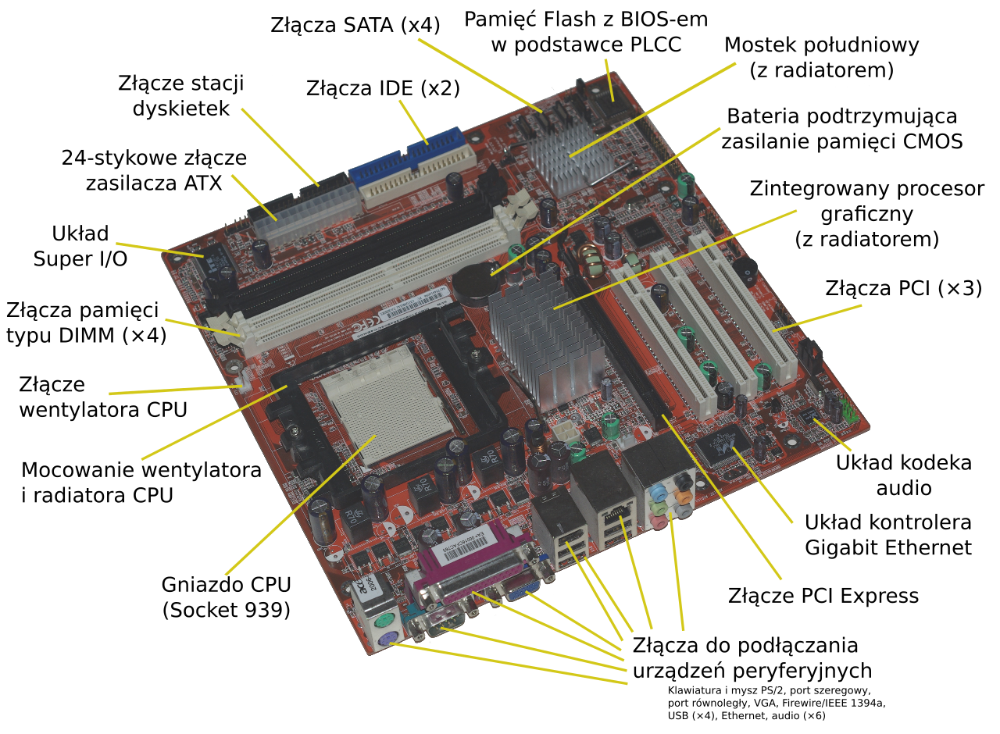

PŁYTA GŁÓWNA
Co to w ogóle jest ? Płyta główna (ang. motherboard, mainboard) – obwód drukowany urządzenia elektronicznego, na którym montuje się najważniejsze elementy, umożliwiając komunikację wszystkim pozostałym komponentom i modułom.
W komputerze na płycie głównej znajdują się: procesory, pamięć operacyjna lub gniazda do zainstalowania tych urządzeń oraz gniazda do zainstalowania dodatkowych płyt zwanych kartami rozszerzającymi (np. PCI), oraz gniazda do urządzeń składujących
(dyski twarde, napędy optyczne itp.), złącze klawiatury i zasilacza. W niektórych konstrukcjach także gniazda do innych urządzeń zewnętrznych, do których sprzęt znajduje się na płycie głównej (port szeregowy, port równoległy, USB).
Koncepcję zbudowania komputera osobistego wyposażonego tylko w minimum potrzebnych urządzeń zamontowanych na jednej płycie drukowanej oraz gniazd, do których podłącza się dodatkowe urządzenia, zapoczątkowała firma IBM, wprowadzając komputer
osobisty, zwany też PC.
źródło: https://pl.wikipedia.org/wiki/P%C5%82yta_g%C5%82%C3%B3wna